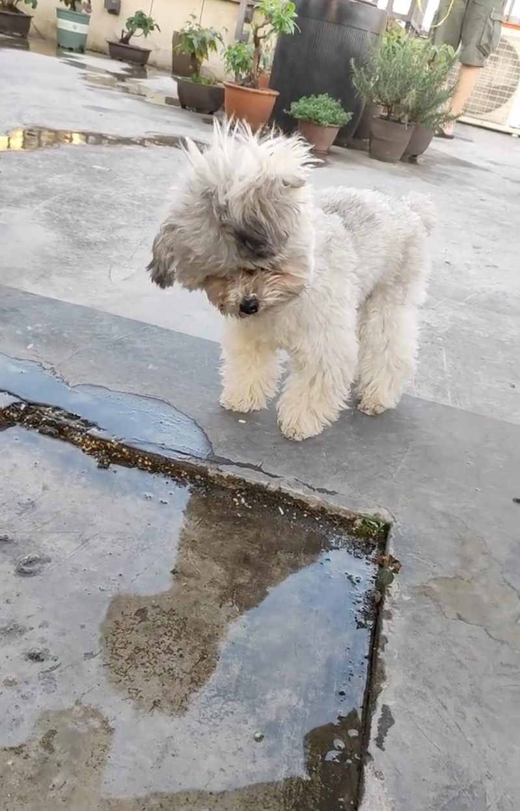

小狗是人类的好友，许多人喜欢饲养小狗作为宠物。网友分享一只灰白色的小狗对着水坑歪头的影片，模样相当可爱，引来大批网友朝圣，直呼「谁家的宝宝真可爱！」
一名网友在微博发布一支影片，一只灰白色的小狗站在水坑前面，不断看着水坑左右歪头，仿佛在观察自己的倒影，观察几次后小狗还伸出手触碰水坑，神似好奇宝宝的模样相当可爱。该网友直呼「对着自己的影子歪头的狗勾，也觉得自己很可爱吧」。
其他人则留言「宝宝，你是小狗，不是拨浪鼓」、「狗狗：我真可爱我真可爱呀」、「灰头土脸的是谁家宝宝」、「可爱又有趣，潦草就潦草吧」、「狗狗：原来我介么萌」、「这个秀勾，简直可爱的不要不要的了」、「太可爱了」、「宝宝你可爱」、「嗯？狗狗疑惑」、「萌化了」、「宝宝也很好奇吧」、「好可爱的傻狗」、「太可爱啦」。